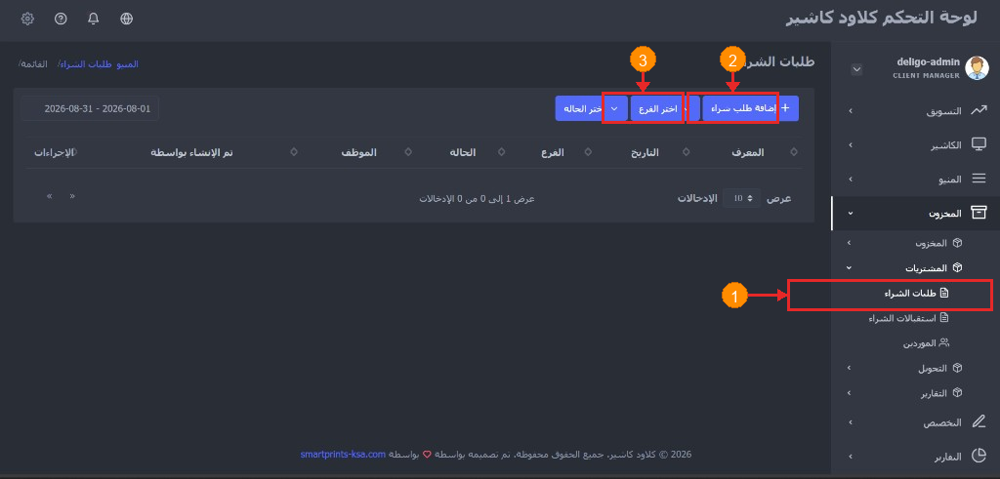
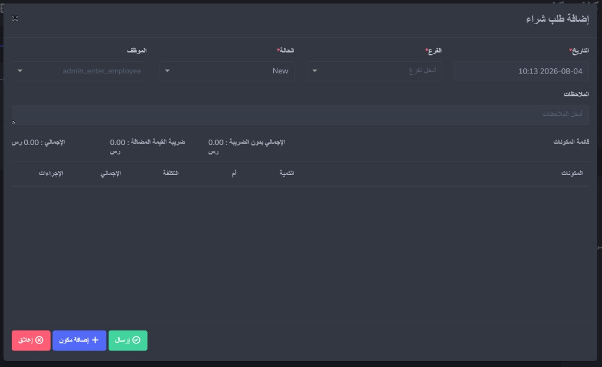
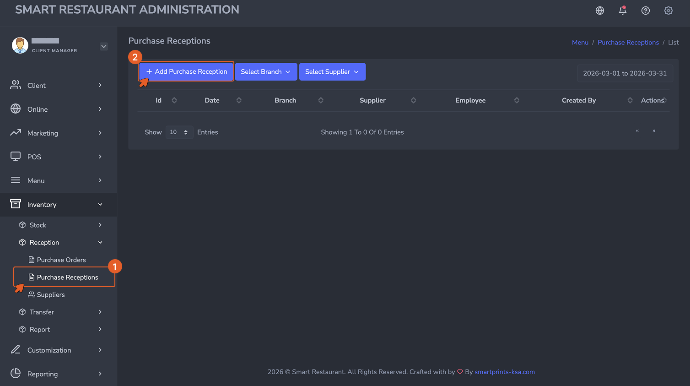
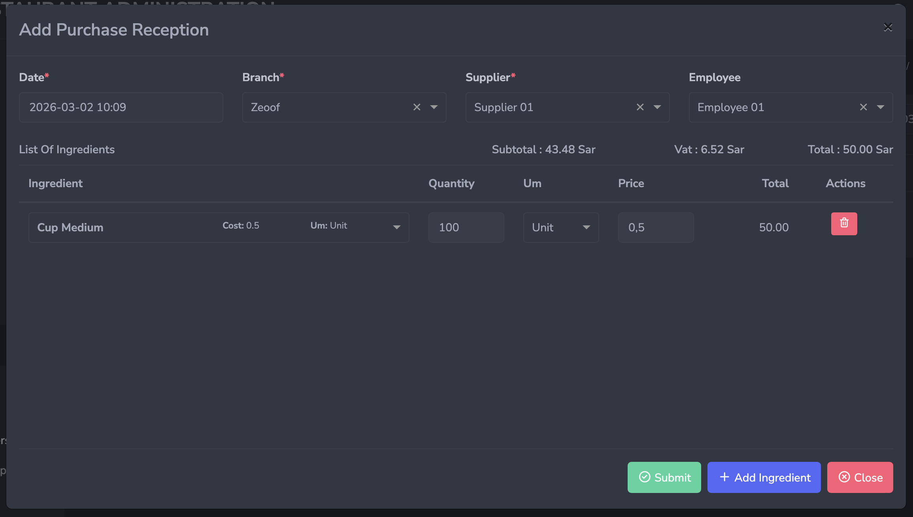
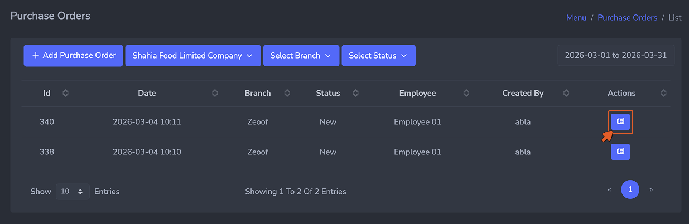
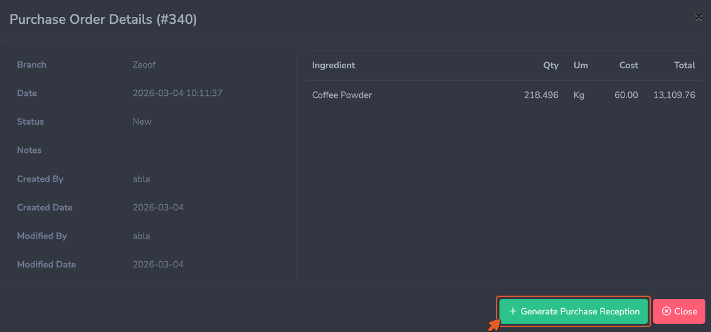

Purchase Orders — Overview
أوامر الشراء — نظرة عامة
A purchase order is a formal request sent to a supplier for a
specific quantity of ingredients. It records what you intend to
buy, from whom, and at what cost — before the delivery arrives.
Creating purchase orders in the system gives you a procurement
trail, allows you to track outstanding orders, and prepares the
system to receive the delivery correctly when it arrives.
أمر الشراء هو طلب رسمي يُرسَل إلى المورد لكمية محددة من
المكونات. يُسجِّل ما تنوي شراءه، ومن مَن، وبأي تكلفة — قبل وصول
التسليم. يمنحك إنشاء أوامر الشراء في النظام مساراً للمشتريات،
ويتيح لك تتبع الطلبات المعلقة، ويُهيِّئ النظام لاستلام التسليم
بشكل صحيح عند وصوله.
Note:
ملاحظة:
A purchase order on its own does not affect stock. Stock only
increases when the delivery is received and a Purchase
Reception is recorded against it.
أمر الشراء وحده لا يؤثر على المخزون. لا يزيد المخزون إلا عند
استلام التسليم وتسجيل استلام شراء مرتبط به.
How to Access
كيفية الوصول
Navigate to
Inventory → Purchasing → Purchase Orders, then click + Add to open the purchase order
form.
انتقل إلى
المخزون ← المشتريات ← طلبات الشراء،
ثم انقر على + إضافة طلب شراء لفتح نموذج طلب
الشراء.

The Purchase Orders list view. Each row represents one order
placed with a supplier. The status column shows whether the
order is new, partially received, or fully received.
عرض قائمة طلبات الشراء. كل صف يمثل طلباً واحداً مُقدَّماً
لمورد. يُظهر عمود الحالة ما إذا كان الطلب جديداً أو مُستلَماً
جزئياً أو مُستلَماً بالكامل.
The Purchase Order Form — Field by Field
نموذج طلب الشراء — حقل بحقل

The Purchase Order form. Select the supplier first, then add
each ingredient and the quantity being ordered as a separate
line.
نموذج طلب الشراء. أضف كل مكون والكمية المطلوبة كسطر منفصل، ثم
انقر على إضافة مكون.
-
Supplier (Required): The vendor this order is
being placed with. Only suppliers registered in the system
will appear in the dropdown. If a supplier is missing, return
to Step 03 and create their record before proceeding.
-
Date (Required): The date the purchase order
is being created. Auto-populated with the current date but can
be adjusted.
-
Branch (Required): The branch that will
receive this delivery. Stock from the reception will be added
to this branch's inventory.
-
Expected Delivery Date (Optional): The date
the delivery is expected to arrive. Useful for planning and
for flagging overdue orders.
-
Notes (Optional): Any instructions or
references relevant to this order.
-
List of Items: Each ingredient being ordered
is added as a line with Item, Quantity, Unit, Unit Cost, and
Total Cost (calculated automatically as Quantity x Unit Cost).
Click + Add Item to add a new line.
-
المورد (مطلوب): البائع الذي يُوضَع له هذا
الطلب. سيظهر في القائمة المنسدلة الموردون المسجلون في النظام
فقط. إذا كان المورد مفقوداً، عُد إلى الخطوة 03 وأنشئ سجله قبل
المتابعة.
-
التاريخ (مطلوب): تاريخ إنشاء طلب الشراء.
يُملأ تلقائياً بالتاريخ الحالي ولكن يمكن تعديله.
-
الفرع (مطلوب): الفرع الذي سيستلم هذا التسليم.
سيُضاف المخزون من الاستلام إلى مخزون هذا الفرع.
-
الحالة (مطلوب): حالة الطلب (مثل جديد).
-
الموظف: الموظف المرتبط بطلب الشراء.
-
الملاحظات (اختياري): أي تعليمات أو مراجع ذات
صلة بهذا الطلب.
-
قائمة المكونات: يُضاف كل مكون مطلوب كسطر يحتوي
على المكونات، الكمية، أ.م، التكلفة، والإجمالي. انقر على
إضافة مكون لإضافة سطر جديد، ثم
إرسال للحفظ.
Submitting the Purchase Order
إرسال أمر الشراء
Click Submit to save the purchase order. The
order status is set to New and it becomes available for
selection when recording the incoming delivery as a purchase
reception.
انقر على إرسال لحفظ أمر الشراء. تُضبَط حالة
الطلب على "جديد" ويصبح متاحاً للاختيار عند تسجيل التسليم الوارد
كاستلام شراء.
Tip:
نصيحة:
Purchase orders are most valuable when they are created before
the delivery arrives — not after. Creating them in advance
lets the receiving team verify the delivery against the order
and flag discrepancies immediately.
أوامر الشراء أكثر قيمة عندما تُنشأ قبل وصول التسليم — وليس
بعده. يُتيح إنشاؤها مسبقاً لفريق الاستلام التحقق من التسليم
مقابل الطلب والإشارة إلى التناقضات فوراً.
Overview
نظرة عامة
Every delivery must be recorded as a purchase reception. A
delivery that arrives but is not recorded means the system has
no knowledge of that stock — consumption will push those
quantities negative faster than expected and your stock levels
will diverge from reality.
يجب تسجيل كل تسليم كاستلام شراء. التسليم الذي يصل دون تسجيل يعني
أن النظام لا يعلم بذلك المخزون — وسيدفع الاستهلاك تلك الكميات
إلى السالب أسرع مما هو متوقع وستنحرف مستويات مخزونك عن الواقع.
How to Access
كيفية الوصول
Navigate to
Inventory → Purchasing → Purchase
Receptions, then click + Add to open the reception form.
انتقل إلى
المخزون ← المشتريات ← استلامات الشراء، ثم انقر على + إضافة لفتح نموذج الاستلام.

The Purchase Receptions list view. Every recorded delivery
appears here. Each reception is linked to the purchase order
it fulfills.
عرض قائمة استلامات الشراء. تظهر هنا كل عملية تسليم مُسجَّلة.
كل استلام مرتبط بأمر الشراء الذي يُنفِّذه.
The Purchase Reception Form — Field by Field
نموذج استلام الشراء — حقل بحقل

The Purchase Reception form. Link it to the original purchase
order, then verify and confirm the quantities actually
received.
نموذج استلام الشراء. اربطه بأمر الشراء الأصلي، ثم تحقق من
الكميات المستلمة فعلياً وأكِّدها.
-
Supplier (Required): Must match the supplier
on the original purchase order.
-
Date (Required): The date and time the
delivery was received. Auto-populated but editable. Set this
to the actual delivery time for accurate stock history.
-
Branch (Required): The branch receiving the
delivery. Stock will be added to this branch's inventory upon
submission.
-
Purchase Order (Required): The original
purchase order this reception is fulfilling. Selecting the
purchase order pre-populates the expected items and
quantities.
-
List of Items: Each item received is listed
with its expected quantity. Your team updates the quantity to
reflect what was actually delivered if it differs from what
was ordered. Fields include Item, Expected Quantity, Received
Quantity, Unit, and Unit Cost.
-
المورد (مطلوب): يجب أن يتطابق مع المورد في
أمر الشراء الأصلي.
-
التاريخ (مطلوب): تاريخ ووقت استلام التسليم.
يُملأ تلقائياً ولكن قابل للتعديل. اضبطه على وقت التسليم الفعلي
للحصول على سجل مخزون دقيق.
-
الفرع (مطلوب): الفرع المستلِم للتسليم. سيُضاف
المخزون إلى مخزون هذا الفرع عند الإرسال.
-
أمر الشراء (مطلوب): أمر الشراء الأصلي الذي
يُنفِّذه هذا الاستلام. يؤدي اختيار أمر الشراء إلى تعبئة
الأصناف والكميات المتوقعة مسبقاً.
-
قائمة الأصناف: يُدرَج كل صنف مُستلَم بكميته
المتوقعة. يُحدِّث فريقك الكمية لتعكس ما تم تسليمه فعلاً إذا
اختلف عما تم طلبه. تشمل الحقول: الصنف، الكمية المتوقعة، الكمية
المستلمة، الوحدة، وتكلفة الوحدة.
Partial and Over-Reception
الاستلام الجزئي والزائد
Deliveries do not always match purchase orders exactly. The
system handles both scenarios:
لا تتطابق التسليمات دائماً مع أوامر الشراء بدقة. يتعامل النظام
مع كلا السيناريوهين:
-
Partial reception occurs when a supplier
delivers less than what was ordered — for example, 8kg of a
10kg order. Record only the quantity actually received. The
purchase order status will update to Partially Received, and
the remaining quantity can be received in a subsequent
reception.
-
Over-reception occurs when a supplier
delivers more than what was ordered. Record the actual
received quantity. The system will add the full received
amount to stock regardless of what the order specified.
-
الاستلام الجزئي يحدث عندما يُسلِّم المورد أقل
مما تم طلبه — على سبيل المثال، 8 كيلوغرام من طلب بـ 10
كيلوغرام. سجِّل الكمية المستلمة فعلاً فقط. ستتحدث حالة أمر
الشراء إلى "مُستلَم جزئياً"، ويمكن استلام الكمية المتبقية في
استلام لاحق.
-
الاستلام الزائد يحدث عندما يُسلِّم المورد
أكثر مما تم طلبه. سجِّل الكمية المستلمة الفعلية. سيُضيف النظام
المبلغ الكامل المستلَم إلى المخزون بغض النظر عما حدده الطلب.
Always record what physically arrived — not what was ordered.
Stock accuracy depends on receptions reflecting reality.
سجِّل دائماً ما وصل فعلياً — وليس ما تم طلبه. دقة المخزون
تعتمد على أن تعكس الاستلامات الواقع.
Generating a Reception Directly from a Purchase Order
إنشاء استلام مباشرة من أمر شراء
You can create a reception without going through the Purchase
Receptions menu. Open the Purchase Orders list, click the view
icon on any order, then click
+ Generate Purchase Reception at the bottom of
the order details. This opens a pre-filled reception form linked
to that order, saving you from entering the supplier, branch,
and items manually.
يمكنك إنشاء استلام دون المرور بقائمة استلامات الشراء. افتح قائمة
أوامر الشراء، انقر على أيقونة العرض لأي طلب، ثم انقر على
+ إنشاء استلام شراء في أسفل تفاصيل الطلب. يفتح
هذا نموذج استلام مُعبَّأ مسبقاً ومرتبطاً بذلك الطلب، مما يُوفِّر
عليك إدخال المورد والفرع والأصناف يدوياً.

Click the view icon on a purchase order to open its details.
انقر على أيقونة العرض في أمر الشراء لفتح تفاصيله.

Click + Generate Purchase Reception to create a pre-filled
reception directly from the order.
انقر على + إنشاء استلام شراء لإنشاء استلام مُعبَّأ مسبقاً
مباشرةً من الطلب.
Submitting the Reception
إرسال الاستلام
Click Submit to save the reception. Stock
levels for all received ingredients increase immediately at the
selected branch. The linked purchase order status updates to
Received or Partially Received depending on whether the full
order quantity was fulfilled.
انقر على إرسال لحفظ الاستلام. تزيد مستويات
مخزون جميع المكونات المستلمة فوراً في الفرع المختار. تتحدث حالة
أمر الشراء المرتبط إلى "مُستلَم" أو "مُستلَم جزئياً" حسب ما إذا
كانت كمية الطلب الكاملة قد استُوفِيَت.
Important:
مهم:
Once a reception is submitted, stock levels update
immediately. Verify quantities carefully before submitting —
corrections after the fact require a manual stock adjustment
and leave an audit trail entry explaining the change.
بمجرد إرسال الاستلام، تتحدث مستويات المخزون فوراً. تحقق من
الكميات بعناية قبل الإرسال — تتطلب التصحيحات بعد الحقيقة
تعديلاً يدوياً للمخزون وتترك إدخالاً في سجل التدقيق يشرح
التغيير.